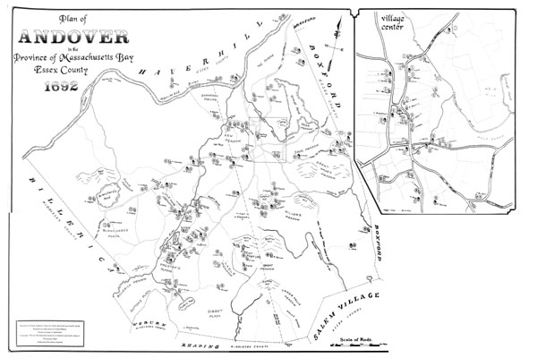

Map of Andover
in 1692
Research on North Andover Center by Forbes Rockwell and Carl R. Smith. Research on other areas by Gratia Mahony.
Map drawn by James S. Batchelder.

Enlarge: Medium
[250k]
Enlarge: Large
[600k]